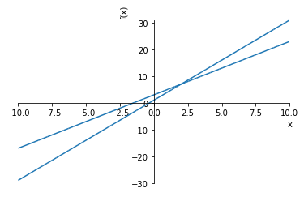

SymPyで代数と式を計算する¶
式の記号と記号演算を定義する¶
\(2x + 1\)
\(2xy\)
\(2x^2\)
\((x+2)(y+3)\)
In [4]:
import sys
!{sys.executable} -m pip install sympy
Collecting sympy
Using cached https://files.pythonhosted.org/packages/dd/f6/ed485ff22efdd7b371d0dbbf6d77ad61c3b3b7e0815a83c89cbb38ce35de/sympy-1.3.tar.gz
Collecting mpmath>=0.19 (from sympy)
Using cached https://files.pythonhosted.org/packages/7a/05/b3d1472885d8dc0606936ea5da0ccb1b4785682e78ab15e34ada24aea8d5/mpmath-1.0.0.tar.gz
Building wheels for collected packages: sympy, mpmath
Running setup.py bdist_wheel for sympy ... - \ | / - \ | / - \ | / - \ | / - \ | / - \ done
Stored in directory: /Users/k2works/Library/Caches/pip/wheels/6c/59/86/478e3c0f298368c119095cc5985dedac57c0e35a85c737f823
Running setup.py bdist_wheel for mpmath ... - \ done
Stored in directory: /Users/k2works/Library/Caches/pip/wheels/33/15/0f/9ca5f2ad88a5456803098daa189f382408a81556aa209e97ff
Successfully built sympy mpmath
Installing collected packages: mpmath, sympy
Successfully installed mpmath-1.0.0 sympy-1.3
In [10]:
import unittest
from sympy import Symbol
from sympy import symbols
class TestSymPy(unittest.TestCase):
def test_01(self):
x = Symbol('x')
expect = x + x + 1
self.assertEqual(expect, 2 * x + 1)
def test_02(self):
a = Symbol('x')
expect = a + a + 1
self.assertEqual(expect, 2 * a + 1)
def test_03(self):
x = Symbol('x')
y = Symbol('y')
s = x * y + x * y
self.assertEqual(s, 2 * x * y)
def test_04(self):
x = Symbol('x')
y = Symbol('y')
p = x * (x + x)
self.assertEqual(p, 2 * x ** 2)
x, y = symbols('x,y')
p = x * (x + x)
self.assertEqual(p, 2 * x ** 2)
def test_05(self):
x = Symbol('x')
y = Symbol('y')
p = (x + 2) * (x + 3)
self.assertEqual(p, (x + 2) * (x + 3))
x, y = symbols('x,y')
p = (x + 2) * (x + 3)
self.assertEqual(p, (x + 2) * (x + 3))
if __name__ == '__main__':
unittest.main(argv=['first-arg-is-ignored'], exit=False)
.....
----------------------------------------------------------------------
Ran 5 tests in 0.004s
OK
式を扱う¶
式の因数分解と展開¶
\(x^2-y^2\) = \((x-y)(x+y)\)
\(x3 + 3x^2y + 3xy^2 + y^3\) = \((x + y)^3\)
\(x + y + xy\) = \(xy + x + y\)
In [12]:
import unittest
from sympy import Symbol
from sympy import factor, expand
class TestSymPy(unittest.TestCase):
def test_01(self):
x = Symbol('x')
y = Symbol('y')
expr = x ** 2 - y ** 2
self.assertEqual(factor(expr), (x - y) * (x + y))
def test_02(self):
x = Symbol('x')
y = Symbol('y')
expr = x**2 - y**2
factors = factor(expr)
self.assertEqual(expand(factors), x**2 - y**2)
def test_03(self):
x = Symbol('x')
y = Symbol('y')
expr = x**3 + 3*x**2*y + 3*x*y**2 + y**3
factors = factor(expr)
self.assertEqual(factors,(x + y)**3)
self.assertEqual(expand(factors),x**3 + 3*x**2*y + 3*x*y**2 + y**3)
def test_04(self):
x = Symbol('x')
y = Symbol('y')
expr = x + y + x*y
self.assertEqual(factor(expr), x*y + x + y)
if __name__ == '__main__':
unittest.main(argv=['first-arg-is-ignored'], exit=False)
....
----------------------------------------------------------------------
Ran 4 tests in 0.013s
OK
プリティプリント¶
\(x^2 + 2xy + y^2\)
\(2x^2 + 2x + 1\)
\(1 + 2x + 2x^2\)
In [14]:
from sympy import Symbol
from sympy import pprint
from sympy import init_printing
if __name__ == '__main__':
x = Symbol('x')
y = Symbol('y')
expr = x*x + 2*x*y + y*y
print(expr)
pprint(expr, use_unicode=True)
expr = 1 + 2*x + 2*x**2
pprint(expr, use_unicode=True)
init_printing(order='rev-lex')
pprint(expr, use_unicode=True)
x**2 + 2*x*y + y**2
2 2
x + 2⋅x⋅y + y
2
2⋅x + 2⋅x + 1
2
2⋅x + 2⋅x + 1
級数を出力する¶
\(x + \frac{x^2}{2} + \frac{x^3}{3} + \frac{x^4}{4} + ... + \frac{x^n}{n}\)
In [16]:
import unittest
from sympy import Symbol, pprint, init_printing
'''
級数を出力
x + x**2 + x**3 + ... + x**n
--- --- ---
2 3 n
xの値で級数の値を計算
'''
def print_series(n):
# 出力を逆順に初期化
init_printing(order='rev-lex')
x = Symbol('x')
series = x
for i in range(2, n + 1):
series = series + (x ** i) / i
pprint(series)
return series
class TestPrintSeries(unittest.TestCase):
def test_01(self):
x = Symbol('x')
self.assertEqual(print_series(1), x)
self.assertEqual(print_series(2), x ** 2 / 2 + x)
self.assertEqual(print_series(3), x ** 3 / 3 + x ** 2 / 2 + x)
self.assertEqual(print_series(4), x ** 4 / 4 + x ** 3 / 3 + x ** 2 / 2 + x)
if __name__ == '__main__':
unittest.main(argv=['first-arg-is-ignored'], exit=False)
.....
x
2
x
── + x
2
3 2
x x
── + ── + x
3 2
4 3 2
x x x
── + ── + ── + x
4 3 2
----------------------------------------------------------------------
Ran 5 tests in 0.028s
OK
値に代入する¶
\(xx + xy + xy + yy\)
\(x = 1, y = 2\)
\(9\)
\(x = y - 1\)
\(y^2 + 2y(-y + 1)+(-y + 1)^2\)
\(y^2 - 2y^2 + 2y + y^2 -2y + 1\)
\(1\)
In [17]:
import unittest
from sympy import Symbol
from sympy import factor, expand, simplify
class TestSymPy(unittest.TestCase):
def test_01(self):
x = Symbol('x')
y = Symbol('y')
expr = x * x + x * y + x * y + y * y
self.assertEqual(expr.subs({x: 1, y: 2}), 9)
def test_02(self):
x = Symbol('x')
y = Symbol('y')
expr = x * x + x * y + x * y + y * y
self.assertEqual(expr.subs({x: 1 - y}), y ** 2 + 2 * y * (-y + 1) + (-y + 1) ** 2)
def test_03(self):
x = Symbol('x')
y = Symbol('y')
expr = x * x + x * y + x * y + y * y
expr_subs = expr.subs({x: 1 - y})
self.assertEqual(simplify(expr_subs), 1)
if __name__ == '__main__':
unittest.main(argv=['first-arg-is-ignored'], exit=False)
....
x
2
x
── + x
2
3 2
x x
── + ── + x
3 2
4 3 2
x x x
── + ── + ── + x
4 3 2
----------------------------------------------------------------------
Ran 4 tests in 0.031s
OK
級数の値を計算する¶
In [18]:
import unittest
from sympy import Symbol, pprint, init_printing
def print_series(n, x_value):
# 出力を逆順に初期化
init_printing(order='rev-lex')
x = Symbol('x')
series = x
for i in range(2, n+1):
series = series + (x**i)/i
pprint(series)
# x_valueで級数評価
series_value = series.subs({x:x_value})
print('Value of the series at {0}: {1}'.format(x_value, series_value))
return series_value
class TestPrintSeries(unittest.TestCase):
def test_01(self):
x = Symbol('x')
self.assertEqual(print_series(5,12), 278052/5)
if __name__ == '__main__':
unittest.main(argv=['first-arg-is-ignored'], exit=False)
....
5 4 3 2
x x x x
── + ── + ── + ── + x
5 4 3 2
Value of the series at 12: 278052/5
----------------------------------------------------------------------
Ran 4 tests in 0.015s
OK
文字列を数式に変換する¶
数式乗算器¶
In [19]:
import unittest
from sympy import Symbol, expand, sympify
from sympy.core.sympify import SympifyError
'''
２式の積
'''
def product(expr1, expr2):
try:
expr1 = sympify(expr1)
expr2 = sympify(expr2)
except SympifyError:
print('Invalid input')
else:
prod = expand(expr1 * expr2)
print(prod)
return prod
class TestProduct(unittest.TestCase):
def test_01(self):
x = Symbol('x')
expr1 = x ** 2 + x * 2 + x
expr2 = x ** 3 + x * 3 + x
self.assertEqual(product(expr1, expr2), x ** 5 + 3 * x ** 4 + 4 * x ** 3 + 12 * x ** 2)
def test_02(self):
x = Symbol('x')
y = Symbol('y')
expr1 = x*y+x
expr2 = x*x+y
self.assertEqual(product(expr1, expr2), x**3*y + x**3 + x*y**2 + x*y)
if __name__ == '__main__':
unittest.main(argv=['first-arg-is-ignored'], exit=False)
......
5 4 3 2
x x x x
── + ── + ── + ── + x
5 4 3 2
Value of the series at 12: 278052/5
x**5 + 3*x**4 + 4*x**3 + 12*x**2
x**3*y + x**3 + x*y**2 + x*y
----------------------------------------------------------------------
Ran 6 tests in 0.020s
OK
方程式を解く¶
In [7]:
import unittest
from sympy import Symbol, solve
class TestSolve(unittest.TestCase):
def test_01(self):
x = Symbol('x')
expr = x - 5 - 7
self.assertEqual(solve(expr), [12])
if __name__ == '__main__':
unittest.main(argv=['first-arg-is-ignored'], exit=False)
....
5 4 3 2
x x x x
── + ── + ── + ── + x
5 4 3 2
Value of the series at 12: 278052/5
x**5 + 3*x**4 + 4*x**3 + 12*x**2
x**3*y + x**3 + x*y**2 + x*y
----------------------------------------------------------------------
Ran 4 tests in 0.012s
OK
2次方程式を解く¶
\(x^2 + 5^x + 4\)
\(x^2 + x + 1\)
In [8]:
import unittest
from sympy import Symbol, solve, pprint
class TestSolve(unittest.TestCase):
def test_01(self):
x = Symbol('x')
expr = x ** 2 + 5 * x + 4
self.assertEqual(solve(expr), [-4, -1])
self.assertEqual(solve(expr, dict=True), [{x: -4}, {x: -1}])
def test_02(self):
x = Symbol('x')
expr = x**2 + x + 1
pprint(solve(expr, dict=True))
if __name__ == '__main__':
unittest.main(argv=['first-arg-is-ignored'], exit=False)
.....
5 4 3 2
x x x x
── + ── + ── + ── + x
5 4 3 2
Value of the series at 12: 278052/5
x**5 + 3*x**4 + 4*x**3 + 12*x**2
x**3*y + x**3 + x*y**2 + x*y
⎡⎧ 1 √3⋅ⅈ⎫ ⎧ 1 √3⋅ⅈ⎫⎤
⎢⎨x: - ─ - ────⎬, ⎨x: - ─ + ────⎬⎥
⎣⎩ 2 2 ⎭ ⎩ 2 2 ⎭⎦
----------------------------------------------------------------------
Ran 5 tests in 0.080s
OK
１変数を他の変数について解く¶
\(s = ut + \frac{1}{2}att\)
\(t:\frac{1}{a}(-u+\sqrt{2.0as + u^2})\)
\(t:-\frac{1}{a}(-u+\sqrt{2.0as + u^2})\)
In [10]:
from sympy import Symbol, solve, pprint
s = Symbol('s')
u = Symbol('u')
t = Symbol('t')
a = Symbol('a')
expr = u*t + (1/2)*a*t*t - s
t_expr = solve(expr, t, dict=True)
pprint(t_expr)
⎡⎧ ______________⎫ ⎧ ⎛ ______________⎞ ⎫⎤
⎢⎪ ╱ 2 ⎪ ⎪ ⎜ ╱ 2 ⎟ ⎪⎥
⎢⎨ -u + ╲╱ 2.0⋅a⋅s + u ⎬ ⎨ -⎝u + ╲╱ 2.0⋅a⋅s + u ⎠ ⎬⎥
⎢⎪t: ──────────────────────⎪, ⎪t: ─────────────────────────⎪⎥
⎣⎩ a ⎭ ⎩ a ⎭⎦
連立方程式を解く¶
\(2x + 3y = 6\)
\(3x + 2y = 12\)
In [15]:
from sympy import Symbol, solve, pprint
x = Symbol('x')
y = Symbol('y')
expr1 = 2 * x + 3 * y - 6
expr2 = 3 * x + 2 * y - 12
soln = solve((expr1, expr2), dict=True)
print(soln)
soln = soln[0]
expr1 = expr1.subs({x: soln[x], y: soln[y]})
print(expr1)
expr2 = expr2.subs({x: soln[x], y: soln[y]})
print(expr2)
[{x: 24/5, y: -6/5}]
0
0
SymPyを使ってプロットする¶
\(y = 2x+3\)
In [20]:
from sympy.plotting import plot
from sympy import Symbol
x = Symbol('x')
plot(2*x*3)
plot((2*x + 3),(x, -5, 5))
plot(2*x + 3,(x, -5, 5), title='A Line', xlabel='x', ylabel='2x+3')
Out[20]:
<sympy.plotting.plot.Plot at 0x118e49b70>
ユーザが入力した式をプロットする¶
In [1]:
from sympy import Symbol, sympify, solve
from sympy.plotting import plot
def plot_expression(expr):
y = Symbol('y')
solutions = solve(expr, y)
expr_y = solutions[0]
plot(expr_y)
if __name__ == '__main__':
expr = input('Enter your expression in terms of x and y: ')
try:
expr = sympify(expr)
except SympifyError:
print('Invalid input')
else:
plot_expression(expr)
---------------------------------------------------------------------------
ModuleNotFoundError Traceback (most recent call last)
<ipython-input-1-dda691141808> in <module>()
----> 1 from sympy import Symbol, sympify, solve
2 from sympy.plotting import plot
3
4 def plot_expression(expr):
5 y = Symbol('y')
ModuleNotFoundError: No module named 'sympy'
複数の関数をプロットする¶
\(y=2x+3\)
\(y=3x+1\)
In [25]:
from sympy.plotting import plot
from sympy import Symbol
x = Symbol('x')
plot(2*x+3, 3*x+1)

Out[25]:
<sympy.plotting.plot.Plot at 0x121883898>
In [22]:
from sympy.plotting import plot
from sympy import Symbol
x = Symbol('x')
p = plot(2*x+3, 3*x+1, lengend=True, show=False)
p[0].line_color = 'b'
p[1].line_color = 'r'
p.show()